Saitama comenzó a hacer de héroe por pura afición, y tras tres años de un durísimo entrenamiento consiguió tal nivel de fuerza que puede acabar con cualquier enemigo de un solo puñetazo. Ahora la vida emocionante que esperaba tener se ha convertido en una de tedio absoluto, pero ¿habrá alguien a su nivel entre todos los héroes del mundo? ¿Y un villano capaz de hacerle sombra?
TEMPORADA 1
One Punch Man - Temporada 1
Título original: ワンパンマン
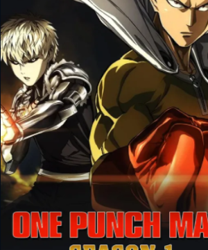
Capitulos:

Temporada 1 - Sinopsis
Saitama está decidido a convertirse en superhéroe. Tras años de entrenamiento, se ha hecho fuerte y se enfrenta a todo tipo de monstruos para proteger a la humanidad. En la lucha contra uno de estos monstruos Genos (un ciborg que defiende la justicia) tras ver a Saitama en acción, le pregunta si puede ser alumno suyo. Saitama no le interesa tener alumnos pero Genos lo sigue de todas formas. Genos convence a Saitama de convertirse en héroe y hacer el examen para el ingreso a la sociedad de héroes, los dos ingresan a la sociedad y después de vencer a varios monstruos un meteorito amenaza con caer a la tierra y todos los héroes más fuertes se dirigen a detenerlo. En la batalla final Saitama se enfrenta contra un alienígena que llega a destruir la tierra tras un premonición que tuvo en donde podría encontrar a alguien tan fuerte que acabara con su aburrimiento.
TEMPORADA 2
One Punch Man - Temporada 2
Título original: ワンパンマン
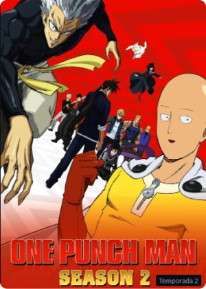Poco tiempo después de la invasión del conquistador alienígena Boros, la vida en la Tierra se mantuvo igual. Saitama sigue desmotivado por no encontrar un rival digno y Genos trata de hacerse cada vez más fuerte. Sin embargo, ese corto momento de paz se verá interrumpido por la Asociación de Monstruos que se pone a hacer estragos por las ciudades y por Garou, un hombre que caza héroes para convertirse en un monstruo humano.
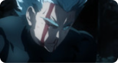
C3-Empieza la caza
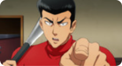
C4-Bate metálico
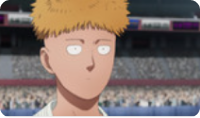
C7-Héroe de clase S
Ver todos los capítulos
ONE PUNCH MAN
ワンパンマン -> Su traducción literal es “Hombre Un-Golpe”
La pronunciación de su nombre en japonés, "Wanpanman"
Personajes Principales
Saitama (サイタマ ):
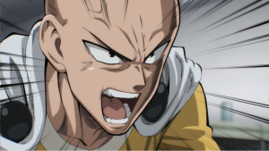Genos (ジェノス):
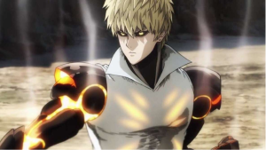Tatsumaki (タツマキ ):

Satoru (サトル ):
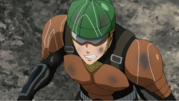Bang (バ ン グ):
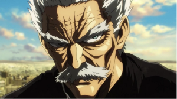Boros (ボロス ):
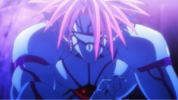Garou (ガロウ ):
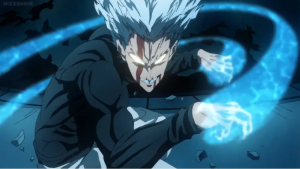King:
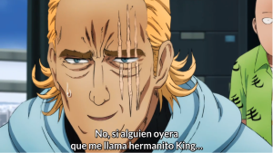Sonic:
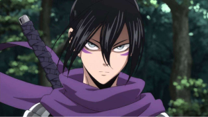
¿Hay trailer o algún avance de One Punch Man, Temporada 3?
La tercera temporada de ‘One Punch Man’ aún no tiene fecha de lanzamiento oficial, pero se especula que podría debutar durante el verano 2022. Al parecer, los desarrolladores se están retrasando debido a la pandemia mundial.
Un dato relevante es que dentro de los 23 volúmenes de One Punch Man, los primeros 7 volúmenes se utilizaron para la primera temporada. Los volúmenes 8 a 16 se dedicaron a la segunda temporada y aún quedan los últimos 7 para otra temporada más.
Además, Yusuke Murata ilustró el remake del manga y lanzó sus 23 volúmenes el 4 de enero de 2021. Por lo tanto, podemos especular que los creadores completarán la historia en la tercera temporada de One Punch Man.